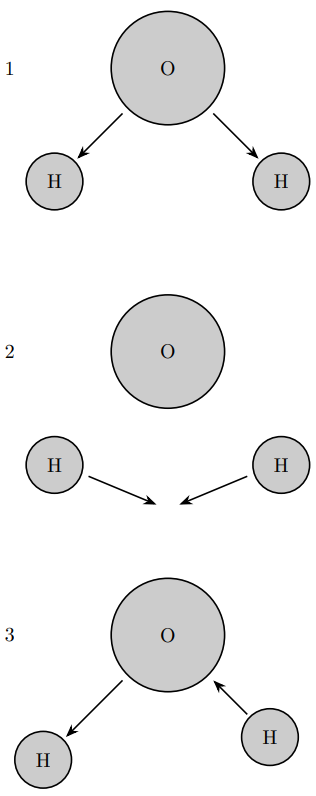
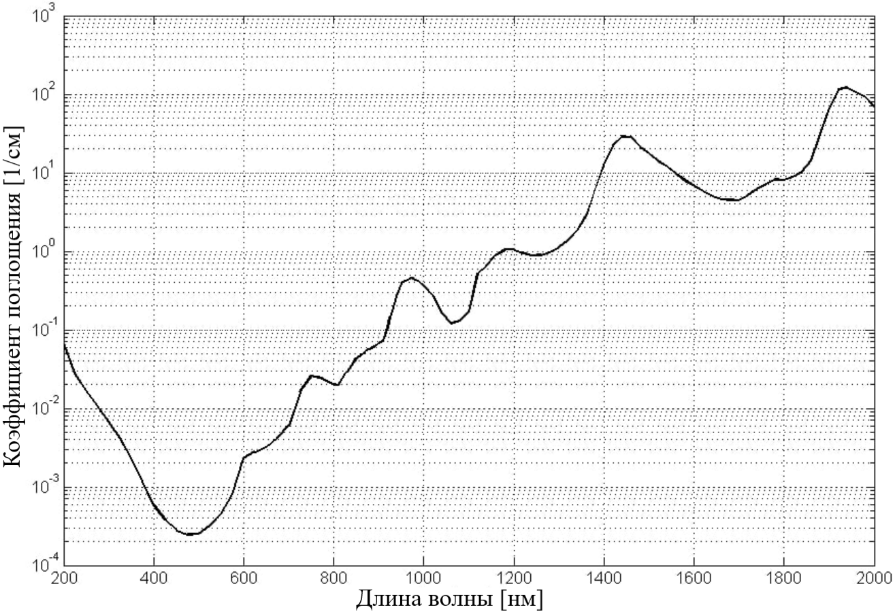
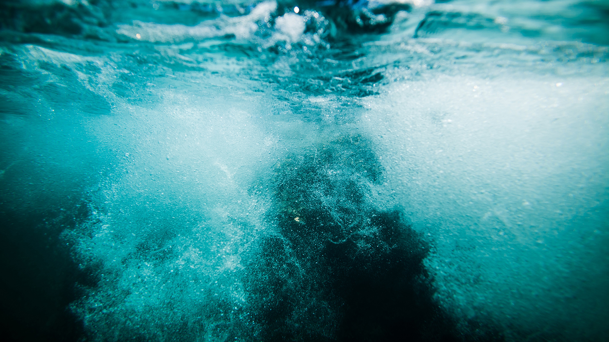
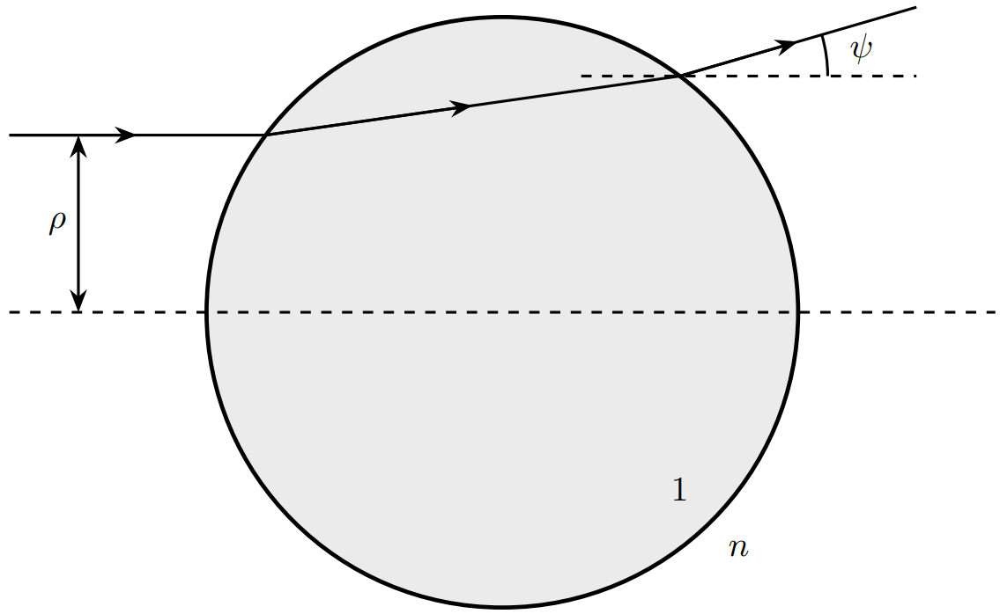
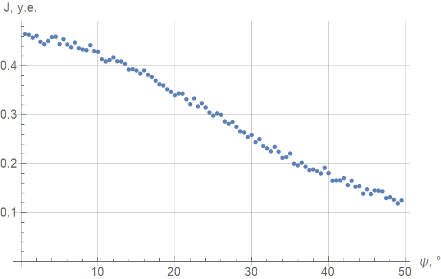

Y24 (2024) — English translation
If you have gone swimming in a river at least once, you have most likely noticed the interesting optical properties of “real” water. We are talking mainly about the processes of scattering and absorption on the water itself and the structures inside it (particles, bubbles, etc.) [see. rice. 1].
These phenomena can tell an experienced researcher a lot about the properties and characteristics of water in a particular body of water, therefore methods for solving problems of scattering and absorption are also of applied interest. This is what this task will focus on.
The water molecule ($\mathrm{H_2O}$) consists of two hydrogen atoms and one oxygen atom, forming an isosceles triangle. Like any mechanical system, a water molecule can experience vibrations around its equilibrium position. All three possible modes of vibration of a water molecule are shown in Fig. 2.
The water molecule ($\mathrm{H_2O}$) consists of two hydrogen atoms and one oxygen atom, forming an isosceles triangle. Like any mechanical system, a water molecule can experience vibrations around its equilibrium position. All three possible modes of vibration of a water molecule are shown in Fig. 2.

When the frequency of an electromagnetic wave propagating in water turns out to be approximately a multiple of one of the natural frequencies of vibrations of the molecule, these vibrations are excited in the water molecules with a very large amplitude, “taking away” the energy of the wave and subsequently re-emitting it in all directions. This leads to the fact that the absorption coefficient has local maxima at these frequencies [see. rice. 3]. Note: The absorption coefficient determines the distance after which the beam intensity decreases by a factor of $e$. Dimension $[\kappa]=м^{-1}$.
Note: The absorption coefficient determines the distance after which the beam intensity decreases by a factor of $e$. Dimension $[\kappa]=м^{-1}$.

Since the mass of the oxygen atom is much greater than the mass of the hydrogen atom, it can be considered practically motionless. Moreover, hydrogen atoms interact with each other noticeably less than with the oxygen atom. According to the results of experimental studies, the frequencies of the two vibration modes practically coincide, and the frequency of the third mode turns out to be two times less than the other two with good accuracy.
It is clear that all frequencies corresponding to local maxima must be multiples of some fundamental frequency $\nu_0$. To find the fundamental frequency, it is necessary to “lay” these points on a straight line, i.e. select the frequency multiplicities so as to obtain a linear dependence. To do this, it is necessary to develop a criterion for “getting on the line.” Usually, hitting a straight line is taken as a criterion, taking into account the error cross. As an error, we take the half-width at half-height - the minimum frequency deviation at which the absorption indicator drops by 2 times.
To do this, it is necessary to develop a criterion for “getting on the line.” Usually, hitting a straight line is taken as a criterion, taking into account the error cross. As an error, we take the half-width at half-height - the minimum frequency deviation at which the absorption indicator drops by 2 times.
In “real” water, not only absorption, but also scattering of light occurs. In this problem we consider scattering by air bubbles. An example is shown in Fig. 4.

For simplicity, we consider scattering by a single bubble [see rice. 5]. Let us introduce the relative impact parameter $\rho$ as the ratio of the impact parameter to the radius of the bubble, and denote the deflection angle as $\psi$. The refractive index inside the bubble is $1$, outside – $n$.

Then the deflection angle will be written as\[\psi=2\left[\arcsin n\rho-\arcsin\rho\right],\]and the intensity of the scattered radiation - as\[\mathcal J(\psi)\equiv\frac{\rho~ \mathrm d\rho}{\sin\psi~\mathrm d\psi}.\]In Fig. Figure 6 shows a graph of the dependence $\mathcal J(\psi)$, obtained experimentally.

An honest solution to the inverse problem (determining the refractive index of a liquid $n$ from the distribution $\mathcal J(\psi)$) is possible, but quite problematic. As a compromise, it is proposed to consider the asymptotic behavior of the curve $\mathcal J(\psi)$ in a “convenient” approximation.
The table in the answer sheet shows the experimental points for $\mathcal J(\psi)$. $\mathcal J$ is given in conventional units.
$\psi,~{}^\circ$ $\mathcal J,~у.е.$ $\psi,~{}^\circ$ $\mathcal J,~у.е.$ 0.5 0.465 5.5 0.455 1.0 0.464 6.0 0.444 1.5 0.458 6.5 0.438 2.0 0.462 7.0 0.448 2.5 0.449 7.5 0.436 3.0 0.444 8.0 0.434 3.5 0.451 8.5 0.432 4.0 0.459 9.0 0.442 4.5 0.460 9.5 0.430 5.0 0.445 10.0 0.429 $\psi,~{}^\circ$ $\mathcal J,~у.е.$ $\psi,~{}^\circ$ $\mathcal J,~у.е.$ 10.5 0.414 15.5 0.384 11.0 0.409 16.0 0.391 11.5 0.412 16.5 0.382 12.0 0.417 17.0 0.378 12.5 0.410 17.5 0.370 13.0 0.409 18.0 0.362 13.5 0.404 18.5 0.360 14.0 0.393 19.0 0.352 14.5 0.393 19.5 0.347 15.0 0.391 20.0 0.340 $\psi,~{}^\circ$ $\mathcal J,~у.е.$ $\psi,~{}^\circ$ $\mathcal J,~у.е.$ 20.5 0.343 25.5 0.303 21.0 0.343 26.0 0.300 21.5 0.332 26.5 0.286 22.0 0.321 27.0 0.282 22.5 0.333 27.5 0.285 23.0 0.317 28.0 0.275 23.5 0.324 28.5 0.266 24.0 0.315 29.0 0.264 24.5 0.305 29.5 0.255 25.0 0.299 30.0 0.259 $\psi,~{}^\circ$ $\mathcal J,~у.е.$ $\psi,~{}^\circ$ $\mathcal J,~у.е.$ 30.5 0.244 35.5 0.200 31.0 0.250 36.0 0.197 31.5 0.236 36.5 0.202 32.0 0.231 37.0 0.194 32.5 0.225 37.5 0.187 33.0 0.235 38.0 0.188 33.5 0.225 38.5 0.185 34.0 0.212 39.0 0.180 34.5 0.214 39.5 0.192 35.0 0.221 40.0 0.181 $\psi,~{}^\circ$ $\mathcal J,~у.е.$ $\psi,~{}^\circ$ $\mathcal J,~у.е.$ 40.5 0.165 45.5 0.138 41.0 0.166 46.0 0.145 41.5 0.166 46.5 0.145 42.0 0.171 47.0 0.143 42.5 0.156 47.5 0.130 43.0 0.165 48.0 0.132 43.5 0.153 48.5 0.126 44.0 0.154 49.0 0.119 44.5 0.139 49.5 0.125 45.0 0.148 — —
Note: It is not necessary to use all points to get a good result.
Source: https://pho.rs/p/3864